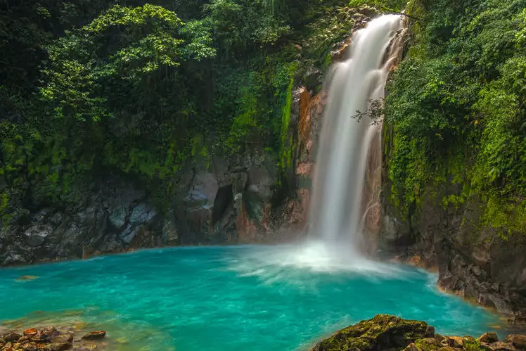
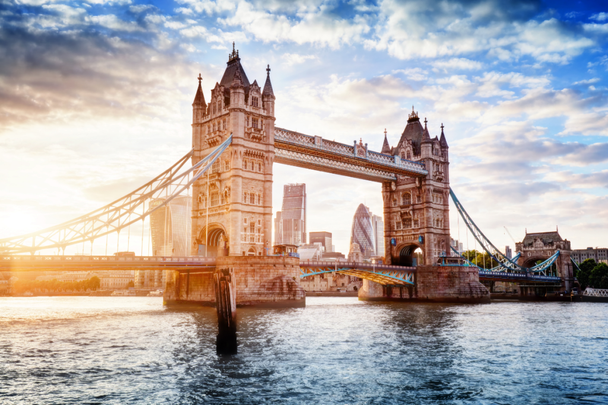
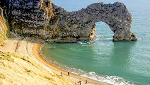
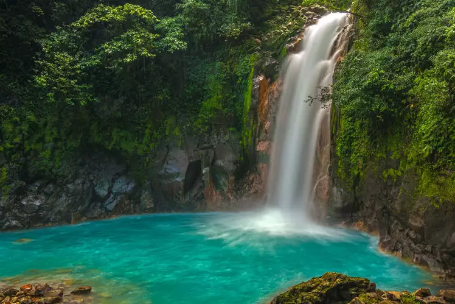
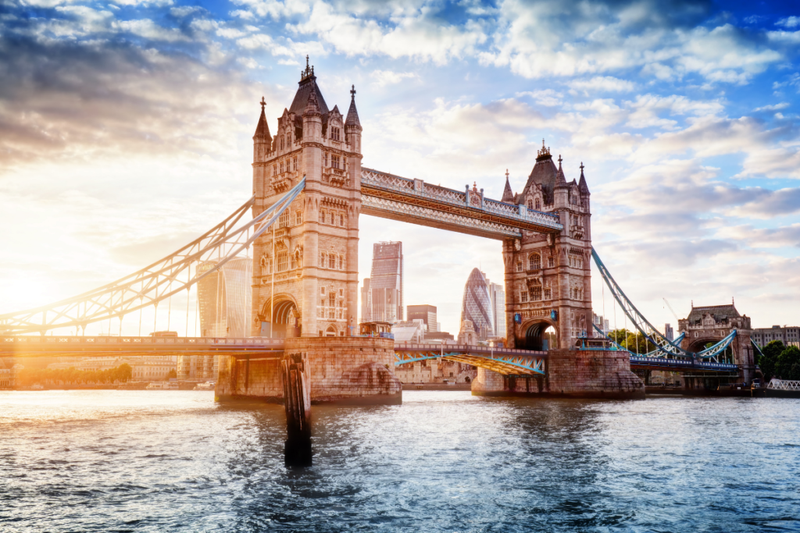
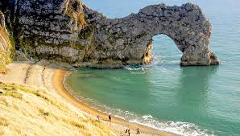
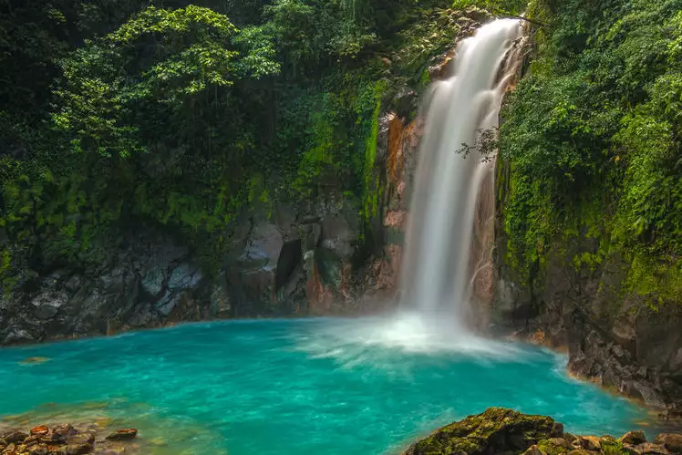
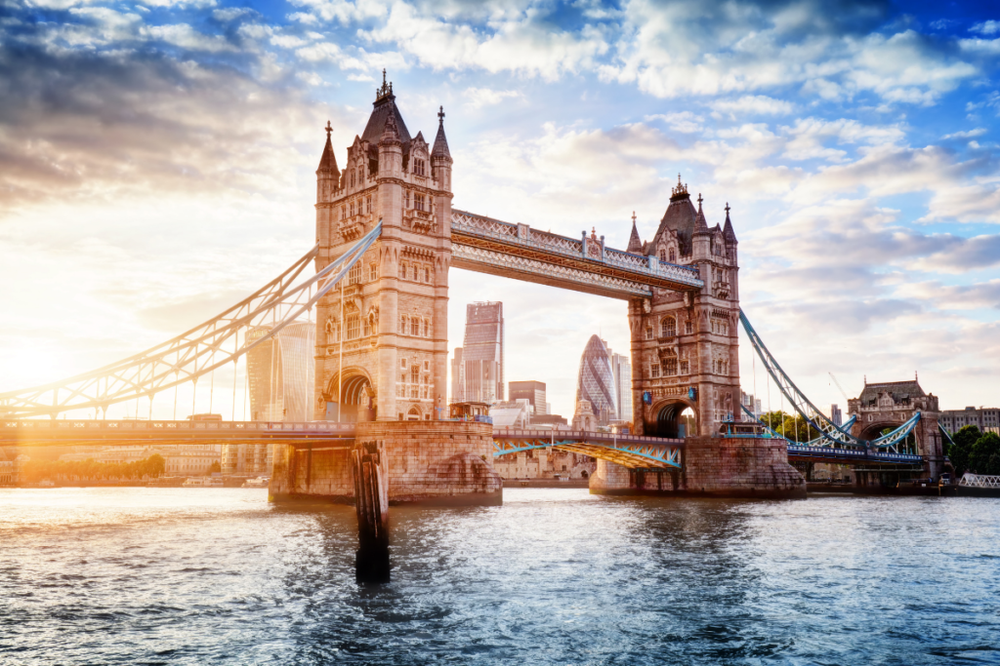
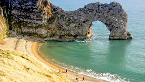

my gallery
 





.jpeg)
Hi, I am Vinisha im from India but currently I am living in the United Kingom (Liverpool). I am currently studying in Holy Cross Catholic Primary school, I am in grade 4. My hobbies are swimming and playing games. Currently, I am learing to code in HTML and CSS . And it is going very good and fun.
I was born in Thane and i lived in india for 3 years i went to pathashala I was homeschooling beacause it was covid. Then, i moved to the United Kingdom in Liverpool. Its been 3 years since i am living here.I like diwali and holi in diwali we celebrate the light and in holi we throw colors at peaople as fun. Ganesh chaturthi is also a festival where we celebrate the birth of lord ganesha.In uk we celebrate christmas and halloween.




I really like swimming beacause it's relaxing and it is enteraining too! I have been practicing it for 2 years my favourite skill is front roll as it can make you go faster. Also, in swimming theres this move called"star' which you go on your back and float like a star.
Equipment needed for swimming

I watched Wicked about in January 2025. It was a very good movie. I really liked the dance with a shcool called shiz. Also when Elphaba became as popular as Glinda.
projects are loading lol...